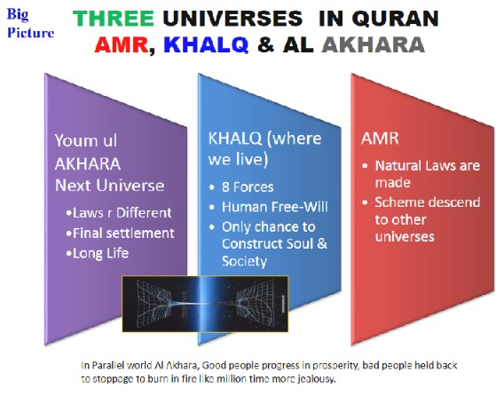
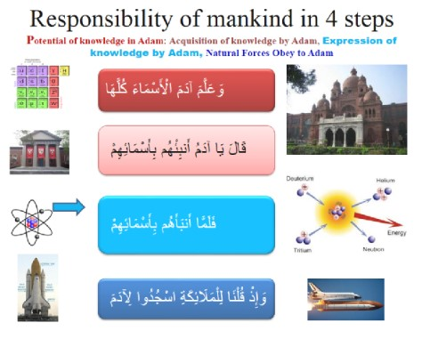
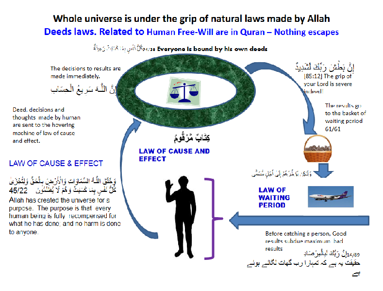
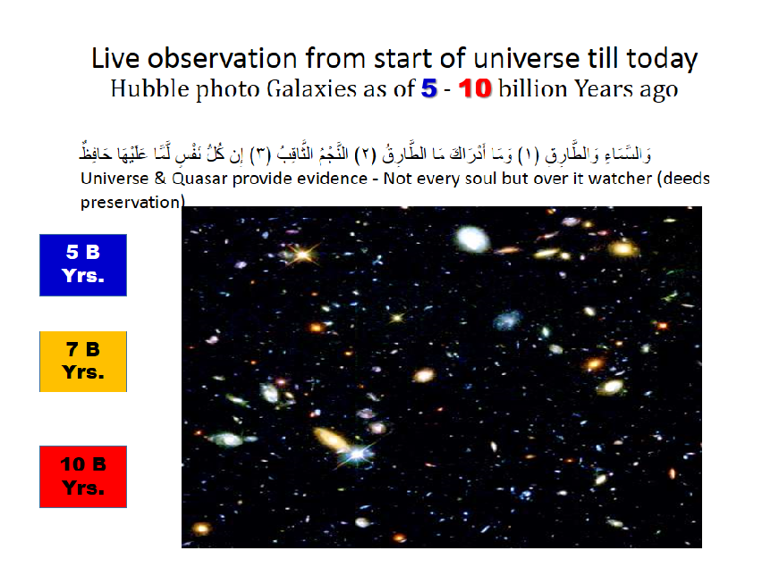

CONTENTS
- Allah made two universes for human KHALQ & AKHRA
- Adam creation initiated 10 billions years ago in stars
- Purpose of Mankind
- Responsibility of Mankind – Masjood e Malaik
- Free-Will – Consciousness (mankind is distinguished )
- Authority Given to Mankind
- Guidance provided - Procedure manual
- Accountability and natural laws of accountability
- Purpose of the Universe - mechanism to Accountability
- Example of Record Keeping – 10 billion year history Shown live
- Timeline: Adam & Universe
STATUS
وَلَقَدْ كَرَّمْنَا بَنِي آدَمَ وَحَمَلْنَاهُمْ فِي الْبَرِّ وَالْبَحْرِ وَرَزَقْنَاهُم مِّنَ الطَّيِّبَاتِ وَفَضَّلْنَاهُمْ عَلَىٰ كَثِيرٍ مِّمَّنْ خَلَقْنَا تَفْضِيلًا
17/70 And certainly We have honoured children of Adam. (and with given knowledge) he can put under use the forces of nature on land and sea and thus earn pleasant sustenance for himself. - In fact We have given superiority to Adam over most of Our creations! (Physical force working in the universe are mighty and powerful, but to mankind We have given superiority over all of them)
1. Two Worlds for Adam
Quran mention three universes as given below. Universe Amrs is where natural laws of God originate. The schemes of God descend from Amr to our existing universe Khalq. We live in Universe Khalq which has four dimensions i.e. 3 space dimensions: left/right, up/down, front/back and one time dimension. In addition, there is energy, mostly in frozen form which is called matter. The energy behaves as per natural laws and than spreads into the universe in the form of heat. Since the universe is expanding, the universe is getting cooler instead of heating up. As you will see under human authority, one of the objective of this universe and next universe is to serve Adam (human).

Adam creation initiated 10 billions years ago in stars
From science point of view, the universe started from nothing about 14 Billion years ago. Stars are element cooking factories and the life ingredient element carbon started being made around 10 billions years ago, inside first generation stars. Please see page 'six stages for the creation of the universe' of this site for details. You may note that elements are smallest block of matter. Matter is made of about 92 stable elements. Elements are made of Atoms. Element 1 is hydrogen which is made of one proton and one electron. Element 92 is Uranium which is made of 92 proton in nucleolus and 92 electrons circling around nucleolus.
The forces that provide the great discipline to an atom are the same that handle explosion of large stars that make the elements. With the same natural laws, our universe has created, from the state of simple hydrogen atom, to an intelligent observer with freedom of choice.
It is a long chain of events, starting from making of carbon in the stars, to making of heavy elements in the supernova and finally making of the solar systems including the planet earth, that has all the requirements of life. First life cell, DNA, was made by a special order called the law of 'Masahiet'. Thereafter the natural law of evolution picked up. Adam as an intelligent observer emerged within 10 billion years, starting from carbon making to its present form. The same laws of nature, which made the atoms, are NOW showing the created observer, all the past history from the beginning of the universe till today in a live form. (How God keeps live records)
2-Adam Creation [please see origin of life]
Because ADAM was to be made so …Universe was required to take the position as follows:
Here are 9 out of numerous critical points, that make our universe. It is called Anthropic cosmological Principle' –
- Fundamental Force Gravity: if a little weak, the matter will flyaway too fast before any galaxy & Star could be made. If gravity force is a little strong, all the matter would convert to black holes and no sky, no star, no life can take shape
- Fundamental Force The electromagnetic is (1039) times stronger than the gravitational force. If gravity is slightly more in strength, stars burn too fast, use up fuel before life has a chance to evolve.
- Fundamental Force 'Strong Nuclear Force' Strength: Strong nuclear force holds particles together in the nucleus of atom. If weaker, nothing exist except hydrogen, if stronger, all elements lighter than iron would be rare. No Life.
- The extreme fine tuning of the universe – amazing in the world of science) The vacuum energy density is at least 10120 times lower than some theoretical estimates. If slightly large, universe would blow out, if slightly less, big crunch will happen, no sky no star, no life.
- The electron's mass is less than the difference in the masses of the neutron and proton. (neutron = proton +electron combined) If not so, every thing convert to neutron. No shining stars no life.
- The neutron is heavier than proton. If neutron slightly more heavier, then neutron is unstable, no heavy elements, no life.
- The carbon nucleus has an excited energy level at around 7.65 million electron-volts (MeV). Without this energy level, less carbon cooked, no life.
- The charges and masses of atomic particles are exact. If the electric charge of the electron had been only slightly different, then stars would be unable to burn hydrogen and helium [ their fuels]
- Level of Strength of electromagnetic force that couples electrons to nucleus. If less, than no electrons held in atoms orbit. If stronger, electrons will not bond with other atoms. Either way, no molecules. No earth, no life.
All the above constants are critical to the formation of the basic building blocks of life. If anything differ 1 to 5%, no life possible
Human given Consciousness and Free-Will
وَإِذْ قَالَ رَبُّكَ لِلْمَلَائِكَةِ إِنِّي خَالِقٌ بَشَرًا مِّن صَلْصَالٍ مِّنْ حَمَإٍ مَّسْنُونٍ ﴿٢٨﴾ فَإِذَا سَوَّيْتُهُ وَنَفَخْتُ فِيهِ مِن رُّوحِي فَقَعُوا لَهُ سَاجِدِينَ ﴿٢٩﴾ فَسَجَدَ الْمَلَائِكَةُ كُلُّهُمْ أَجْمَعُونَ ﴿٣٠﴾ إِلَّا إِبْلِيسَ أَبَىٰ أَن يَكُونَ مَعَ السَّاجِدِينَ ﴿٣١
Recall when your Lord said to the controllers: "I will indeed bring into being a human being out of dry ringing clay wrought from black mud. (Having passed through various evolutionary stages [by controllers of the nature], life, manifested itself in the form of human beings) who were endowed with freedom of the will and choice (2/30).. At that stage the Malaika were asked to bow before Man. Thus all of the controllers bowed except for Satan who chose to be defiant
Note: With technological developments, forces of nature, in line with laws of nature (MALAIKA - angles) conform to the human needs.
Science
Please see origin of life in a separate page of this web site. Below is brief summary to tell what is Natural Law of evolution.
Evolution is generally defined as changes in trait or gene frequency in a population of organisms from one generation to the next. This has been dubbed the standard genetic definition of evolution. Natural selection is only one of several mechanisms in the theory of evolutionary change that explains how organisms historically adapt to changing environments.
As the life progress, species that adopt to environment and the spices that are more fit to the environment survive better. Species that can not adopt to the environment, eliminate.
From one life cell, life in all forms spread on earth. Second example of creation of life, so far, is not found on earth since 4.6 billion years when the planet earth was created. First single cell appeared 3.7 billions years ago. Multi cellular life started about 1 billion years ago. Initially the multi cellular life split into plants and animals and there after spread into millions of species of plants and animals. There has been many periods of destructions, that kept the evolution of human in focus.
Around 300,000 years ago, the human appeared in its existing form. Domestication of plants and animals started around 11 000 years ago.
3. Purpose of Mankind
وَمَا خَلَقْتُ الْجِنَّ وَالْإِنسَ إِلَّا لِيَعْبُدُونِ
51/56. I did not create the jinn and the human except with the objective that, they develop their potential abilities by following the Divine Laws. [result is the jennet society]
لِيَعْبُدُونِ To conform to the guidance of Allah for the purpose of constructive results on human itself. The results are, personal integrity and a welfare society with a culture to give benefits to others.
In brief, human & Jinn is to follow Allah laws for optimum living and create a welfare society in this world and achieve Jennet living in hereafter.
4. Responsibility of Mankind – MASJOOD E Malaik
STATUS OF MANKIND – GET OBEYED BY THE FORCES OF NATURE
[Original Arabic is given as Primary source of information 2/30 to 34]
وَإِذْ قَالَ رَبُّكَ لِلْمَلَائِكَةِ إِنِّي جَاعِلٌ فِي الْأَرْضِ خَلِيفَةً ۖ قَالُوا أَتَجْعَلُ فِيهَا مَن يُفْسِدُ فِيهَا وَيَسْفِكُ الدِّمَاءَ وَنَحْنُ نُسَبِّحُ بِحَمْدِكَ وَنُقَدِّسُ لَكَ ۖ قَالَ إِنِّي أَعْلَمُ مَا لَا تَعْلَمُونَ ﴿٣٠﴾ وَعَلَّمَ آدَمَ الْأَسْمَاءَ كُلَّهَا ثُمَّ عَرَضَهُمْ عَلَى الْمَلَائِكَةِ فَقَالَ أَنبِئُونِي بِأَسْمَاءِ هَـٰؤُلَاءِ إِن كُنتُمْ صَادِقِينَ ﴿٣١﴾ قَالُوا سُبْحَانَكَ لَا عِلْمَ لَنَا إِلَّا مَا عَلَّمْتَنَا ۖ إِنَّكَ أَنتَ الْعَلِيمُ الْحَكِيمُ ﴿٣٢﴾ قَالَ يَا آدَمُ أَنبِئْهُم بِأَسْمَائِهِمْ ۖ فَلَمَّا أَنبَأَهُم بِأَسْمَائِهِمْ قَالَ أَلَمْ أَقُل لَّكُمْ إِنِّي أَعْلَمُ غَيْبَ السَّمَاوَاتِ وَالْأَرْضِ وَأَعْلَمُ مَا تُبْدُونَ وَمَا كُنتُمْ تَكْتُمُونَ ﴿٣٣﴾ وَإِذْ قُلْنَا لِلْمَلَائِكَةِ اسْجُدُوا لِآدَمَ فَسَجَدُوا إِلَّا إِبْلِيسَ أَبَىٰ وَاسْتَكْبَرَ وَكَانَ مِنَ الْكَافِرِينَ
Translations may include element of translator's level of understanding.
And when your Lord said to the Malaika, "I am going to appoint a successor (homo sapiens succeeding earlier generations) on the Earth." They humbly enquired, "Are you going to appoint such a one as will cause disorder and shed blood on the Earth? we are always engaged in performing the duties entrusted upon us and do our utmost to manifest the beauty and symmetry of Your System." (30)Allah replied, "I know what you do not know." After this he taught Adam the names of all things. Then He set these before the Malaika and asked, "Tell Me the names of these things, if you are right (31) The Malaika whereupon, said: "Your Plan extends much beyond the limits of our vision. We only have the knowledge which has been given to us, and do not have the capacity to acquire any more. You have complete knowledge of the entire Universe and only You know Your Plans. (32)Then Allah said to Adam, "Tell them the names of these things." When Adam told them the names of all those things, He addressing the Malaika said, "Didn't I tell you that We know all about Our creations and creatures which you cannot know. We also know how you are functioning at present and what your latent potentialities are." (33)Then We commanded the Malaika, "Bow yourselves to Adam. "All bowed but Iblis did not do so and chose to be defiant and thus became one of those who deny the truth. (34
1. Allah gave Adam the potential to know everything in this universe
2. Allah ask Adam to narrate names of things – (research and development )
3. After Human know and narrate the things in the universe,
4. The forces of nature obey what Adam

5. Free-Will – Consciousness (mankind is distinguished from life in other form)
فَإِذَا سَوَّيْتُهُ وَنَفَخْتُ فِيهِ مِن رُّوحِي فَقَعُوا لَهُ سَاجِدِينَ ﴿٢٩﴾ فَسَجَدَ الْمَلَائِكَةُ كُلُّهُمْ أَجْمَعُونَ ﴿٣٠﴾ إِلَّا إِبْلِيسَ أَبَىٰ أَن يَكُونَ مَعَ السَّاجِدِينَ
15/29: After God سَوَّيْتُهُ fashioned Adam and وَنَفَخْتُ فِيهِ مِن رُّوحِي and breath into Adam HIS spirit (free will). فَإِذَا سَوَّيْتُهُ وَنَفَخْتُ فِيهِ مِن رُّوحِي فَقَعُوا لَهُ سَاجِدِينَ Forces of nature ordered to subdue ADAM
15:29 One force IBLEES refused. It is not subdued. IBLEES is the cause of arrogant behaviour in human 2:34
وَقُلِ الْحَقُّ مِن رَّبِّكُمْ ۖ فَمَن شَاءَ فَلْيُؤْمِن وَمَن شَاءَ فَلْيَكْفُرْ18/29 إِنَّا هَدَيْنَاهُ السَّبِيلَ إِمَّا شَاكِرًا وَإِمَّا كَفُورًا 76/3
74/37 لِمَن شَاءَ مِنكُمْ أَن يَتَقَدَّمَ أَوْ يَتَأَخَّرَ Whosoever amongst you chooses, can either move forward or lag behind
Free will Ensured: Shaitan will remain with human in this world (Human will have free will to choose from good and bad) 7:15 15:36
ROH (CONSCIOUSNESS - FREE WILL)
As per common perception, human brain is a hardware and the consciousness is integrated with the brain like a software. The brain can remain alive without consciousness but consciousness can not stay out side of the brain.
وَيَسْأَلُونَكَ عَنِ الرُّوحِ ۖ قُلِ الرُّوحُ مِنْ أَمْرِ رَبِّي وَمَا أُوتِيتُم مِّنَ الْعِلْمِ إِلَّا قَلِيلًا
17/85 They ask you as to what is the nature of Roh. Tell them that it belongs to the realm of Allah's Amr which it is not possible to grasp with the scanty knowledge that human beings have.
During sleep, a person cannot make decisions or choices
وَهُوَ الَّذِي يَتَوَفَّاكُم بِاللَّيْلِ وَيَعْلَمُ مَا جَرَحْتُم بِالنَّهَارِ ثُمَّ يَبْعَثُكُمْ فِيهِ لِيُقْضَىٰ أَجَلٌ مُّسَمًّى ۖ ثُمَّ إِلَيْهِ مَرْجِعُكُمْ ثُمَّ يُنَبِّئُكُم بِمَا كُنتُمْ تَعْمَلُونَ
6/60 He knows whatever you do during the day time. Then He lays you to rest a state of suspended-consciousness at night; and wakes you again in the day. The cycle of the day and night gradually completes the term of your life. Thereafter there will be the Day of Reckoning when, whatever you have done will be made manifest to you.
It is consciousness that is suspended during the sleep and is dislodged from mind at death
اللَّـهُ يَتَوَفَّى الْأَنفُسَ حِينَ مَوْتِهَا وَالَّتِي لَمْ تَمُتْ فِي مَنَامِهَا ۖ فَيُمْسِكُ الَّتِي قَضَىٰ عَلَيْهَا الْمَوْتَ وَيُرْسِلُ الْأُخْرَىٰ إِلَىٰ أَجَلٍ مُّسَمًّى ۚ إِنَّ فِي ذَٰلِكَ لَآيَاتٍ لِّقَوْمٍ يَتَفَكَّرُونَ
39/42 (One can exercise his choice and discretion only when he is conscious. When his consciousness is suspended or becomes dormant, he simply cannot make decisions. This is observed in every day life. For example) In the state of sleep the conscious mind stops functioning; but when one wakes up, it starts functioning again. (As such the conscious state was temporarily suspended.) However in case of death, the conscious and physical body are permanently dislodged (or as far as this worldly life is concerned, it is finally taken away). In both these cases the consciousness does not function and therefore choice or discretion cannot be utilized.
Minds are Sealed 2:7(The situation is similar to one's moral life. When one is overpowered by his emotions or follows something blindly, his mind becomes practically ineffective. Under such circumstances if he is neither stubborn nor prejudiced, there is still a possibility that his conscience could take him to the right course. On the other hand if he remains stubborn and stiffens further, then his mind becomes redundant and there is no possibility of re-awakening. These are the people about whom it is said that their minds or center's of consciousness are sealed
If no free will then, no accountability
32/13 وَلَوْ شِئْنَا لَآتَيْنَا كُلَّ نَفْسٍ هُدَاهَا "If We had so willed, We could have bestowed guidance on every person.
Free-will is as per Plan of Allah
وَلَوْ شَاءَ رَبُّكَ لَجَعَلَ النَّاسَ أُمَّةً وَاحِدَةً ۖ وَلَا يَزَالُونَ مُخْتَلِفِينَ ﴿١١٨﴾ إِلَّا مَن رَّحِمَ رَبُّكَ ۚ وَلِذَٰلِكَ خَلَقَهُمْ ۗ وَتَمَّتْ كَلِمَةُ رَبِّكَ لَأَمْلَأَنَّ جَهَنَّمَ مِنَ الْجِنَّةِ وَالنَّاسِ أَجْمَعِينَ
(118-119) if it had been Allah's plan that all humanity should be one united Ummah, it would not have been difficult for Him to bring that about by force. This was, however, not His plan. He endowed human-beings with freedom of will and choice. They will, therefore, continue creating differences amongst themselves. Only those who follow Allah's guidance will not do so. According to Allah's Laws, the abode of all the others - both Jinn and Ins - will be Jahannam.
Science (about consciousness or Free-Will)
With the present knowledge, the scientist assume that the consciousness is a one of a physical process of the brain. Scientist have no clue how it works. Biologist are mapping brain neutrons and their physical functions. So far consciousness is nowhere seen as a process.
Limits of the Free Will
لَقَدْ خَلَقْنَا الْإِنسَانَ فِي أَحْسَنِ تَقْوِيمٍ ثُمَّ رَدَدْنَاهُ أَسْفَلَ سَافِلِينَ
95:4. We created man in the best form.
Ability to nourish and develop one self and lead a balanced life in a dignified manner
95:5. However, his selfish interests pulled him down to the lowest of the low states
6. Authority Given to Mankind
Allah Subdued Everything in the Universe for Mankind
وَسَخَّرَ لَكُم مَّا فِي السَّمَاوَاتِ وَمَا فِي الْأَرْضِ جَمِيعًا مِّنْهُ ۚ إِنَّ فِي ذَٰلِكَ لَآيَاتٍ لِّقَوْمٍ يَتَفَكَّرُونَ
45/13: He has subdued everything in the heavens and on earth for you, within the bounds of His Law. And herein are signs for those who think and reflect
Authority is given together with potentials to subdue natural forces and universe
أَلَمْ تَرَوْا أَنَّ اللَّـهَ سَخَّرَ لَكُم مَّا فِي السَّمَاوَاتِ وَمَا فِي الْأَرْضِ وَأَسْبَغَ عَلَيْكُمْ نِعَمَهُ ظَاهِرَةً وَبَاطِنَةً ۗ وَمِنَ النَّاسِ مَن يُجَادِلُ فِي اللَّـهِ بِغَيْرِ عِلْمٍ وَلَا هُدًى وَلَا كِتَابٍ مُّنِيرٍ
[31:20] Did you not see that Allah has made all whatever is in the heavens and all whatever is in the earth, subservient for you and bestowed His favours upon you in full, both visible and hidden. And some people argue regarding Allah, with neither knowledge, nor guidance, nor a clear Book! ?
7-Guidance Provided to Mankind
Quran is the only protected intact source of Guidance.
Following are the Fundamentals of Quran - Quran must be read with un-preconceived mind set
- 100% Complete, no change 6:16 وَتَمَّتْ كَلِمَتُ رَبِّكَ صِدْقًا وَعَدْلًا ۚ لَّا مُبَدِّلَ لِكَلِمَاتِهِ ۚ وَهُوَ السَّمِيعُ الْعَلِيمُ
- Protected by Allah 15:9 إِنَّا نَحْنُ نَزَّلْنَا الذِّكْرَ وَإِنَّا لَهُ لَحَافِظُونَ
- Above doubts, confusion or uncertainty 2:2 ذَٰلِكَ الْكِتَابُ لَا رَيْبَ فِيهِ ۛ هُدًى لِّلْمُتَّقِينَ
- Quran is not complicated 18/1 الْحَمْدُ لِلَّـهِ الَّذِي أَنزَلَ عَلَىٰ عَبْدِهِ الْكِتَابَ وَلَمْ يَجْعَل لَّهُ عِوَجًا ۜ
- 54:22وَلَقَدْ يَسَّرْنَا الْقُرْآنَ لِلذِّكْرِ فَهَلْ مِن مُّدَّكِرٍ
- NO contradiction 4/82 أَفَلَا يَتَدَبَّرُونَ الْقُرْآنَ ۚ وَلَوْ كَانَ مِنْ عِندِ غَيْرِ اللَّـهِ لَوَجَدُوا فِيهِ اخْتِلَافًا كَثِيرًا
- Crystal clear by citing it again and again at various facets 6/105 وَكَذَٰلِكَ نُصَرِّفُ الْآيَاتِ وَلِيَقُولُوا دَرَسْتَ وَلِنُبَيِّنَهُ لِقَوْمٍ يَعْلَمُونَ
- Quran is light NOOR 5/15 قَدْ جَاءَكُم مِّنَ اللَّـهِ نُورٌ وَكِتَابٌ مُّبِينٌ
- Explanation of Quran is God responsibility 75/19 ثُمَّ إِنَّ عَلَيْنَا بَيَانَهُ
- Clear on each topic 16/89 وَنَزَّلْنَا عَلَيْكَ الْكِتَابَ تِبْيَانًا
- Clear Arabic 26/195 بِلِسَانٍ عَرَبِيٍّ مُّبِينٍ
- Rational mind 25/73 وَالَّذِينَ إِذَا ذُكِّرُوا بِآيَاتِ رَبِّهِمْ لَمْ يَخِرُّوا عَلَيْهَا صُمًّا وَعُمْيَانًا
8 - Accountability of The Mankind

Universe Created to give results to human dealings
EVEN THE HUMAN INTENTIONS ARE COUNTED
Hadith (Bukhari ) Volume 1, Book 2, Number 51:
Narrated 'Umar bin Al-Khattab:
Allah's Apostle said, "The reward of deeds depends upon the intention and every person will get the reward according to what he has intended. So whoever emigrated for Allah and His Apostle, then his emigration was for Allah and His Apostle. And whoever emigrated for worldly benefits or for a woman to marry, his emigration was for what he emigrated for."
LAW OF CAUSE & EFFECT
وَخَلَقَ اللَّـهُ السَّمَاوَاتِ وَالْأَرْضَ بِالْحَقِّ وَلِتُجْزَىٰ كُلُّ نَفْسٍ بِمَا كَسَبَتْ وَهُمْ لَا يُظْلَمُونَ 45/22
Allah has created the universe for a purpose. The purpose is that every human being is fully recompensed for what he has done; and no harm is done to anyone.
LAW OF RESPITE
وَلَوْ يُؤَاخِذُ اللَّـهُ النَّاسَ بِظُلْمِهِم مَّا تَرَكَ عَلَيْهَا مِن دَابَّةٍ وَلَـٰكِن يُؤَخِّرُهُمْ إِلَىٰ أَجَلٍ مُّسَمًّى ۖ فَإِذَا جَاءَ أَجَلُهُمْ لَا يَسْتَأْخِرُونَ سَاعَةً ۖ وَلَا يَسْتَقْدِمُونَ
If Allah had seized human beings for their wrong-doings instantaneously, there would not have remained any living being on the face of the earth But the results set to delay for a set period. When that moment arrive, Results Catch: No delay for a minute, Not advanced for a second 16/61
9 - Objective of the Universe as Accountability System to Human
وَلِلَّـهِ مَا فِي السَّمَاوَاتِ وَمَا فِي الْأَرْضِ لِيَجْزِيَ الَّذِينَ أَسَاءُوا بِمَا
عَمِلُوا وَيَجْزِيَ الَّذِينَ أَحْسَنُوا بِالْحُسْنَى
53/31
This is because everything in the heavens and on earth is continuously compiling the consequences of one's deeds; producing negative results for those creating chaos and disorder; and producing positive and pleasant results for those who lead a righteous life
Science
Science clues to the workings of the Universe
- Human is an organized heap of dust particles. Given consciousness and ability to communicate verbally, differentiate Adam from the rest of matter in the universe.
- Human consciousness impacts the Matter: For example in double slit experiment a wave function of an electron or a photon, collapse to particle when a human mind become aware of its path.
- Human experience mentioned in recently published best seller book 'secret' is….You start thinking, it start happening.
- Human thinking is known to God, Law of cause & effect has its reach to mind (Idea from Quran)
- Unison electron or photon pair entanglement experiment. Smallest particles in nature are some how aware of each other's existence even billions of miles apart. If change in the spin of one is made, the other particle change its spin instantly.
- Electrons / photons behaving as Probability Waves and particle both, are integrated with the universe. Probability of finding one is never zero all around space.
- There is no past or future in the world of atomic particles. By doing Experiments it is observed at particle level, absolutely small, that Future Shaped the Past
10 - Example of Record Keeping – 10 billion year history Shown live

Arrow of time One way
How God is preserving records of our deeds
- Time is a fabric of space. It differ in measurement depending upon the position of the observer
- Time travel at speed of light. The clocks Stop if moving at the speed of light.
- In our universe, Time is like a river, frozen in the past, liquid in the future
- In our universe, nothing can go beyond the speed of light. (so far nothing is known that can cross the speed of light)
- In a parallel universe, if the arrow of time is reversed, which we can not do in this world, then each action or thought of human will be made available to be seen
11 - Timeline: Adam & Universe
- Universe started from nothingness around 13.72 billion Ago
- Star formation started 10 billion years ago to make heavy elements the ingredient of earth and human
- Our Solar system made 5 billion years ago
- First life cell, DNA, made 3.5 Billion Years ago with Allah Law of Masahiyat ( it is not a natural law prevalent in our universe)
- Human was given Consciousness around 200,000 years ago
- Allah is showing human his universe as live scenes from start till today From 1929 onward. Further details from 1998 onward, minute details in future (Is not it a great privilege to human? )